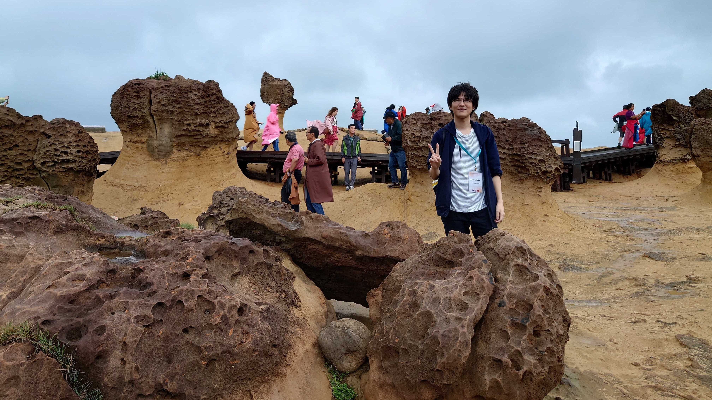

Ph.D. in Earth and Planetary Science
Institute of Science Tokyo / Ohta Laboratory

Fumiya Sakai
For inquiries about my research, please contact me at the address below.
E-mail: fumiya.sakai1997[at]gmail.com